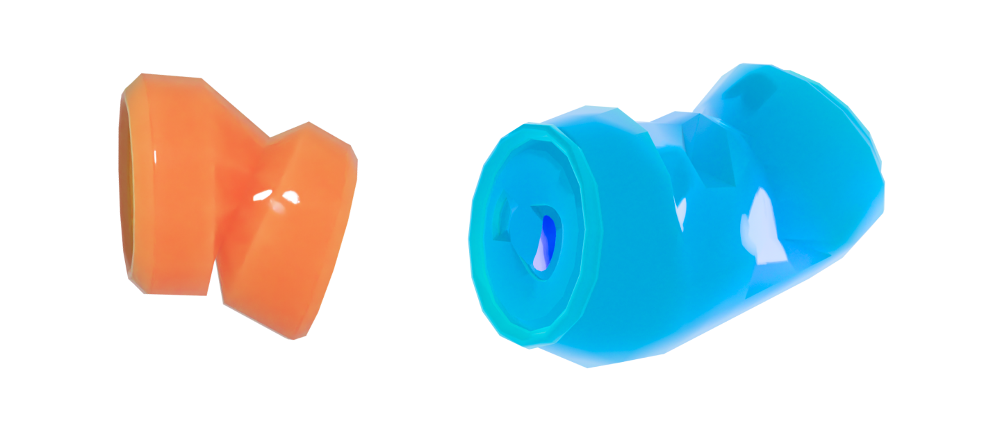

Статьи
Выбросим жестяную банку
Жестяные банки широко используются в упаковке напитков, но в то же время являются одним из наиболее негативных элементов с точки зрения воздействия на окружающую среду. Они могут быть переработаны и повторно использованы, что сделает их утилизацию более экологически безопасной.
Жестяные банки могут быть 100% переработаны бесконечное количество раз без потери качества.
 Негативные свойства
Негативные свойстваНегативные свойства жестяных банок связаны с тем, что они не разлагаются в природе и могут наносить серьезный вред окружающей среде. Кроме того, при производстве жестяных банок требуется большое количество энергии и ресурсов, что тоже оказывает отрицательное воздействие на окружающую среду.
 Что с ними делать?Одним из способов утилизации жестяных банок является их переработка и повторное использование. После сбора и переработки банки могут быть использованы для производства новых изделий, что позволяет сократить количество отходов и ресурсов, затрачиваемых на производство новых банок. Также жестяные банки можно отдавать на переработку в специальные пункты приема, которые есть во многих городах.